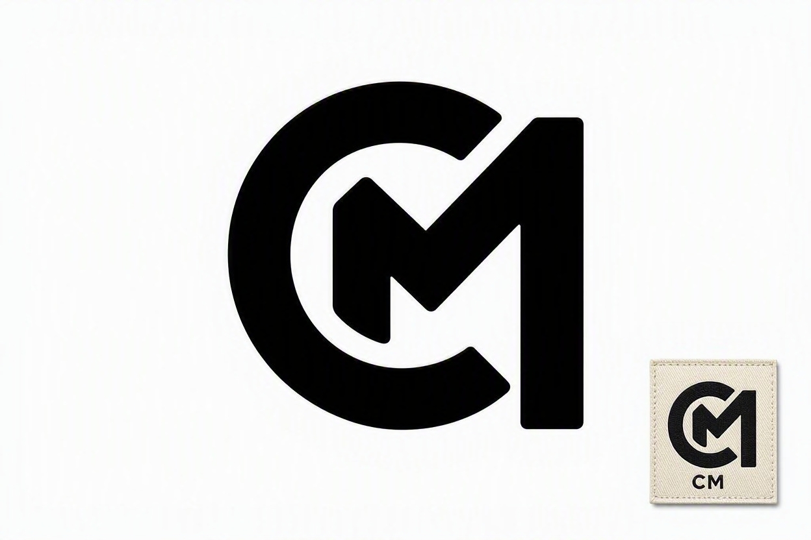

About CueMotion

Music meets fashion.
CueMotion was built in the studio and made for the streets. It is designed for people who move with purpose.
Our Purpose
CueMotion is designed to motivate the community and the next generation to believe in themselves. To dream. To take a risk and make an impact.
Mission
To create high quality streetwear that inspire the youth to gain confidence and selfworth. We aim to build a brand rooted in music, culture and community across South Africa.
Vision
To become the leading South African streetwear brand known for our purpose driven design. A brand that pushes people to believe in themselves and take risks.
What We Stand For
- Built in the studio. Worn on the streets.
- Maximum impact.
- Made for movement.
Founded By
DJ CueMotion - Proudly South African.